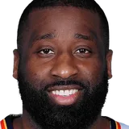

Paul Millsap vs Raymond Felton
Team success, aligned by career season: final NBA finish, record in his games, playoffs and teammate help.
Head to head
Paul Millsap2006-07 to 2021-22| Category | Millsap | Felton |
|---|---|---|
| Career recordwin % in his games, incl. 2026-27 to date | 653–43260.2% | 487–48450.2% |
| W − Lincl. 2026-27 to date | +221 | +3 |
| Titlesthrough 2025-26 | 0 | 0 |
| Playoff trips | 13 | 8 |
| Deepest run | Conference finals | Conference semifinals |
| Average finishadjusted for league size, lower leads, through 2025-26 | 10.1 of 30 | 15.6 of 30 |
| With vs withoutwin-rate gap in points, not a lead category, incl. 2026-27 to date | +7.1 | −5.8 |
| Help per seasonteammates' honors, less help leads, through 2025-26 | 2.6 | 2.6 |
Millsap leads 5 of 7 · Felton leads 0 of 7 · 2 even
Lower is better for finish and help. With vs without isn't counted. Team results, not who was better. How this works
Download image Swap in another player

Season by season
Career season 1 next to career season 1. Each player's season is the team he played the most games for; W–L is his teams' record in his games that season. The tinted finish is the team that finished higher that season, on the league-size-adjusted scale; the last column keeps the running count. Help counts honors won that season by teammates who shared a game with him. Comparison rules.
| # | Paul Millsap | Raymond Felton | Better finish Millsap–Felton | ||||||||
|---|---|---|---|---|---|---|---|---|---|---|---|
| Season | Finish | W–L | Playoffs | Help | Season | Finish | W–L | Playoffs | Help | ||
| 1 | 2006-07 | #4 of 30 | 51–31 | Conference finals | 2.0 | 2005-06 | #27 of 30 | 26–54 | Missed playoffs | 0 | 1–0 |
| 2 | 2007-08 | #6 of 30 | 54–28 | Conference semifinals | 6.0 | 2006-07 | #21 of 30 | 31–47 | Missed playoffs | 0.2 | 2–0 |
| 3 | 2008-09 | #12 of 30 | 44–32 | First round | 0 | 2007-08 | #23 of 30 | 32–47 | Missed playoffs | 0 | 3–0 |
| 4 | 2009-10 | #6 of 30 | 53–29 | Conference semifinals | 4.0 | 2008-09 | #19 of 30 | 35–47 | Missed playoffs | 0.1 | 4–0 |
| 5 | 2010-11 | #19 of 30 | 36–40 | Missed playoffs | 1.1 | 2009-10 | #15 of 30 | 42–38 | First round | 2.0 | 4–1 |
| 6 | 2011-12 | #14 of 30 | 34–30 | First round | 0 | 2010-11 | #14 of 30 | 44–31 | First round | 4.2 | 4–1 |
| 7 | 2012-13 | #17 of 30 | 41–37 | Missed playoffs | 0 | 2011-12 | #20 of 30 | 28–32 | Missed playoffs | 1.0 | 5–1 |
| 8 | 2013-14 | #16 of 30 | 36–38 | First round | 0 | 2012-13 | #6 of 30 | 47–21 | Conference semifinals | 6.5 | 5–2 |
| 9 | 2014-15 | #3 of 30 | 55–18 | Conference finals | 3.0 | 2013-14 | #19 of 30 | 31–34 | Missed playoffs | 1.2 | 6–2 |
| 10 | 2015-16 | #6 of 30 | 48–33 | Conference semifinals | 1.0 | 2014-15 | #11 of 30 | 14–15 | First round | 1.0 | 7–2 |
| 11 | 2016-17 | #11 of 30 | 40–29 | First round | 0 | 2015-16 | #14 of 30 | 40–40 | First round | 0 | 8–2 |
| 12 | 2017-18 | #17 of 30 | 22–16 | Missed playoffs | 0 | 2016-17 | #9 of 30 | 50–30 | First round | 4.0 | 8–3 |
| 13 | 2018-19 | #5 of 30 | 49–21 | Conference semifinals | 5.0 | 2017-18 | #10 of 30 | 48–34 | First round | 7.0 | 9–3 |
| 14 | 2019-20 | #4 of 30 | 30–21 | Conference finals | 4.0 | 2018-19 | #10 of 30 | 19–14 | First round | 9.0 | 10–3 |
| 15 | 2020-21 | #8 of 30 | 38–18 | Conference semifinals | 11.0 | No season | |||||
| 16 | 2021-22 | #14 of 30 | 22–11 | Conference semifinals | 5.0 | No season | |||||
- Career season 1better finish so far: Millsap 1–0 Felton
- Career season 2better finish so far: Millsap 2–0 Felton
- Career season 3better finish so far: Millsap 3–0 Felton
- Career season 4better finish so far: Millsap 4–0 Felton
- Career season 5better finish so far: Millsap 4–1 Felton
- Career season 6better finish so far: Millsap 4–1 Felton
- Career season 7better finish so far: Millsap 5–1 Felton
- Career season 8better finish so far: Millsap 5–2 Felton
- Career season 9better finish so far: Millsap 6–2 Felton
- Career season 10better finish so far: Millsap 7–2 Felton
- Career season 11better finish so far: Millsap 8–2 Felton
- Career season 12better finish so far: Millsap 8–3 Felton
- Career season 13better finish so far: Millsap 9–3 Felton
- Career season 14better finish so far: Millsap 10–3 Felton
- Career season 15
- Career season 16
Why these two: Careers centered on 2013-14 and 2011-12; help 2.6 and 2.6 points per season; own honors 0.3 and 0.0 per season; 1,085 and 971 games.
Paul Millsap · Raymond Felton · Compare any two players · Same help, different results